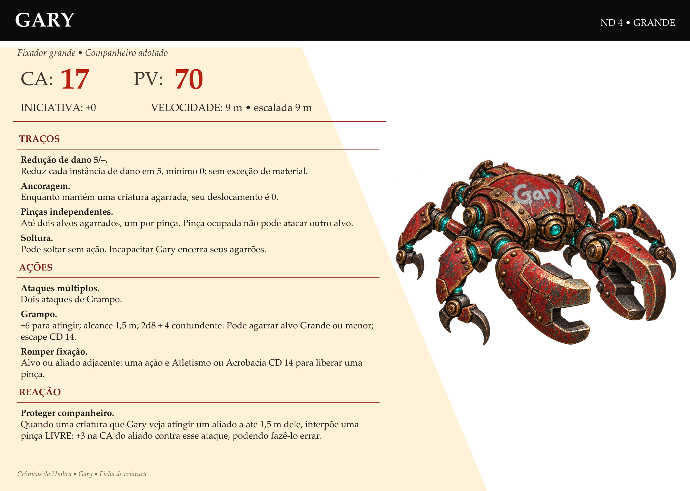

Da caixa ao grupo
O trio trouxe a caixa de Gary pelos controles de carga da oficina e o ativou com 600 de ânima antes da chegada do golem. Ele ajudou a enfrentar a máquina maior e parou depois do combate, sem energia. O grupo decidiu levá-lo para o templo.
Ficha de consulta
CA 17; PV 70; iniciativa +0; deslocamento 9 m e escalada 9 m. Redução de dano 5/−.
Traços
Redução de dano 5/− reduz cada instância de dano em 5, até o mínimo de 0. Enquanto mantém uma criatura agarrada, Gary tem deslocamento 0. Cada pinça pode prender um alvo; uma pinça ocupada não pode atacar outro alvo.
Gary pode soltar uma criatura sem gastar ação. Se ficar incapacitado, os agarrões terminam.
Ações
Ataques múltiplos: dois ataques de Grampo. Grampo: +6 para atingir, alcance 1,5 m; 2d8+4 contundente. Pode agarrar um alvo Grande ou menor, com escape CD 14. O alvo ou um aliado adjacente pode usar uma ação e passar em Atletismo ou Acrobacia CD 14 para liberar uma pinça.
Reação · Proteger companheiro
Quando uma criatura que Gary veja atingir um aliado a até 1,5 m dele, ele pode interpor uma pinça livre: +3 na CA do aliado contra esse ataque, podendo fazê-lo errar.
Energia e cartão
A autonomia entre recargas não recebeu uma regra geral definida. Gary usa sua ficha própria e não recebe automaticamente as características dos Fixadores hostis.
